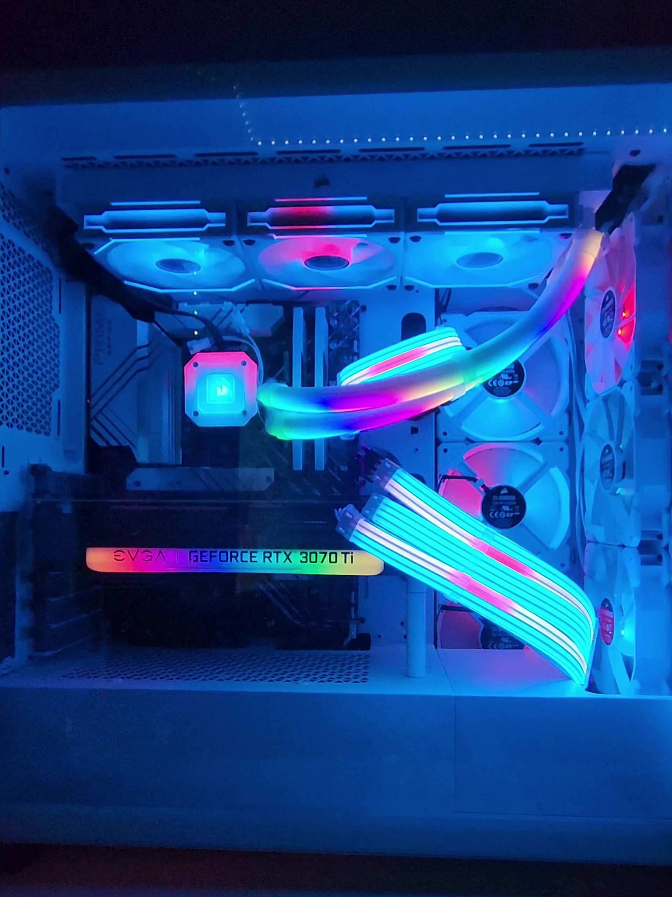

Having a gaming PC is a dream I had since I was about 12 or 13 years old. I always felt inspired and shocked when I would see the gaming rooms that many gamers and youtubers had throughout the years. As I've gotten older, I've had the chance to save up some money and finally take on the task of building a PC. For my very first build, I took a total of 12 hours building, and about 2 days of troubleshooting. Fast forward to today, I've built 4 PC's throughout the year, and I hope to build more.
My First Build

Specifications
Motherboard: Asus Z690-P Prime
CPU: Intel Core i7-12700k
CPU Cooler: Corsair iCUE H150i Elite Capellix
RAM: Corsair Vengenace RGB 32GB DDR5
Storage: Western Digital SN770 2TB
GPU: NVIDIA RTX 3070 Ti
Case: Corsair iCUE 5000x RGB
Power Supply: Corsair RM1000x
Motherboard Power Connector Accessory: Lian Li Strimmer Plus V2 24-Pin
GPU Power Connector Accessory: Lian Li Strimmer Plus V2 Triple 8-Pin
CPU Cooler Accessory: EZDIY-FAB ARGB LED AIO Tube Sleeve